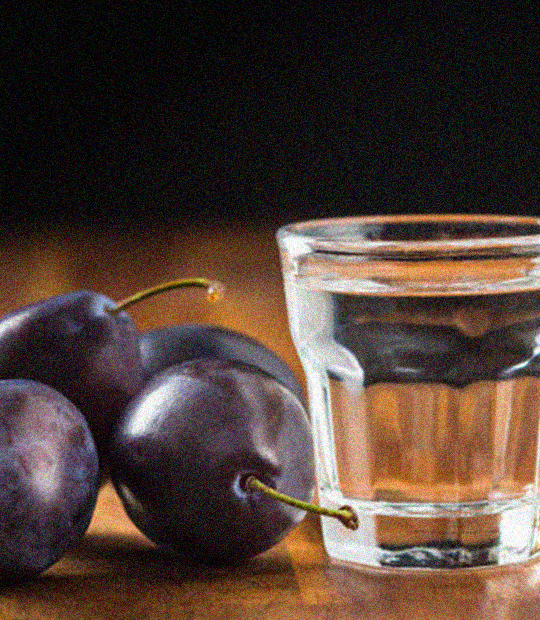

Liqueur de quetsches
Ingrédients pour 1,5 litre de liqueur
- 1 L d'alcool de fruits
- 1 kg de quetsches
- 300 g de sucre
- 10 cl d'eau
- 1 bâton de cannelle ou une gousse de vanille
Préparation
- Laver et inciser les quetsches dans la longueur et la largeur sans les couper en deux. Les conserver entière et les disposer dans un bocal.
Recouvrir avec l'alcool de fruits, mettre la gousse de vanille ou le bâtons de cannelle et fermer hermétiquement.
Conserver à l'abris de la lumière durant 1 mois.
- Préparer le sirop. Pour cela, mettre le sucre et l'eau dans une casserole. Porter à ébullition et laisser bouillir jusqu'à ce que le sucre soit dissout. Réserver.
- Passer la liqueur au chinois en pressant bien les fruits. Filtrer, ajouter le sirop et embouteillr. Laisser infuser le tout durant 2 semaines et déguster.